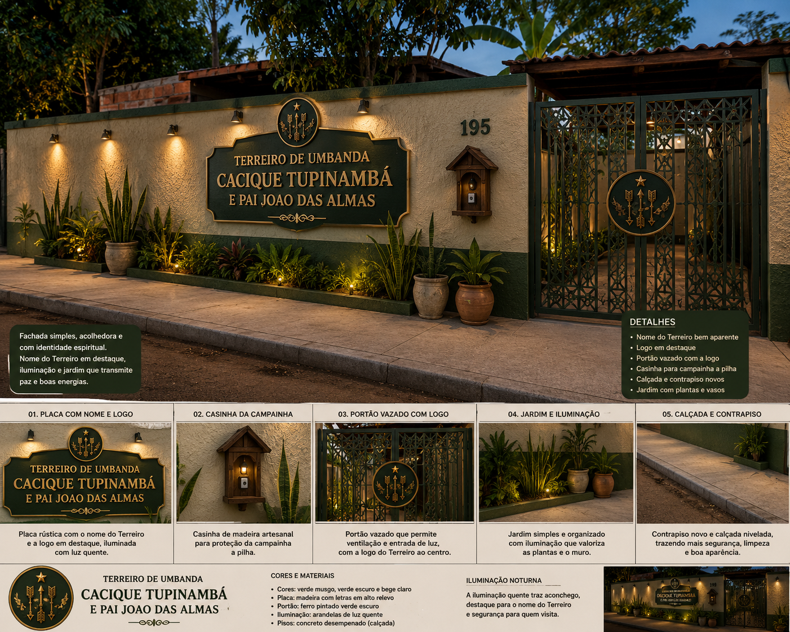

Quinta-feira
Atendimentos e orientações conforme a programação divulgada pela administração.
Um espaço digital para facilitar informações, atendimentos, horários, orientações, eventos e comunicação com a nossa casa.
Um espaço dedicado à fé, caridade, respeito, acolhimento e aos trabalhos espirituais. O portal aproxima quem já caminha conosco e quem está chegando pela primeira vez.

A programação pode mudar. Confira os avisos oficiais antes de se deslocar até a casa.
Atendimentos e orientações conforme a programação divulgada pela administração.
Trabalhos e atividades da casa. Confirme previamente a programação.
Festas e celebrações ficam registradas na área de eventos e nos avisos.
Informações sobre modalidades, horários e orientações de atendimento devem ser confirmadas com a administração. Antes de solicitar qualquer trabalho, consulte as regras da casa e os canais oficiais.
Força para caminhar, aprender e servir.
Prática do bem, acolhimento e auxílio ao próximo.
À espiritualidade, à natureza, à casa e às pessoas.
01 Respeitar dirigentes, filhos, consulentes e visitantes.
02 Manter pontualidade, organização, limpeza e cuidado com os espaços.
03 Seguir as orientações e procedimentos definidos pela casa.
04 Preservar informações internas e a privacidade das pessoas.
05 Usar os canais oficiais para dúvidas, avisos e solicitações.
26/09/2026 • 19h
Rua Marques de Herval, 3500 • Campo Grande/MSSua contribuição ajuda a manter a casa e seus trabalhos. Para organizarmos corretamente os recursos, informe para qual finalidade deseja direcionar sua doação.
Ao realizar sua doação, informe a finalidade para que possamos direcionar o recurso corretamente.
Fale diretamente com o WhatsApp oficial da casa para tirar dúvidas e receber orientações.
📲 Falar no WhatsAppAs áreas internas são protótipos estáticos e não devem receber dados sensíveis em um GitHub Pages público.